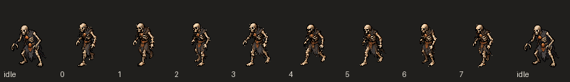

Original eight v1 poses. 100 ms per walk frame; 320 ms idle holds. Shared80×96 canvas and pivot40,96. No independent frame fitting. Narrow torso and partly obscured hip ownership remain review caveats.
